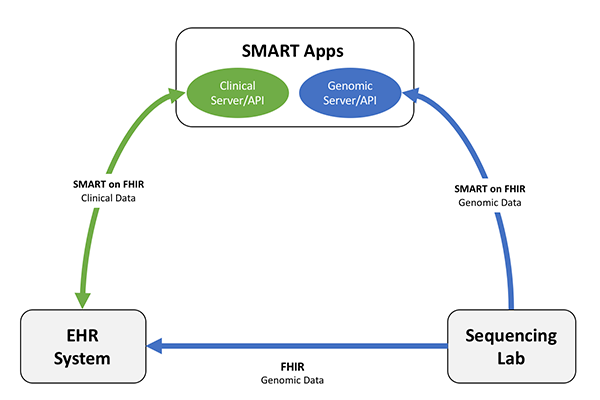
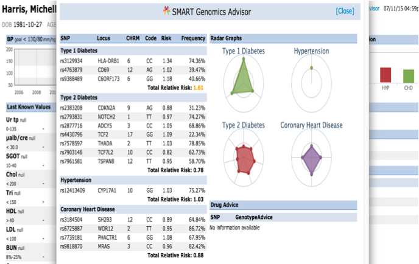
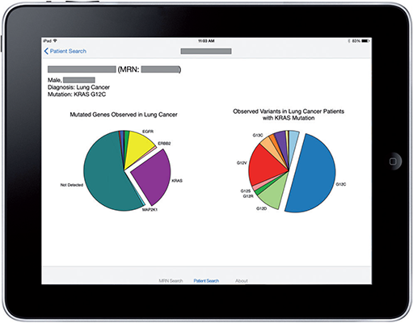
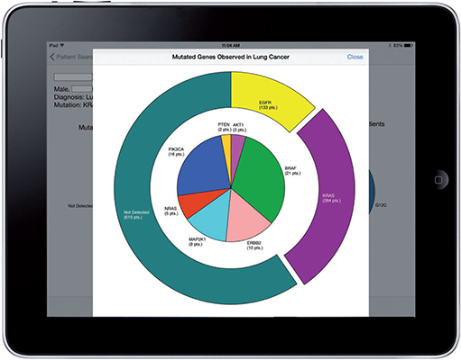
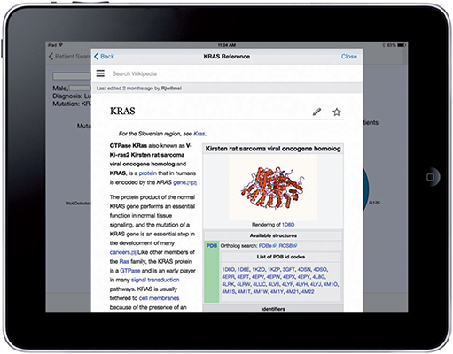

GenomicsReporting 0.3 - Continuous Build

This part introduces some app examples that use SMART(Substitutable Medical Applications and Reusable Technologies) to explore creating clinical genomic apps to integrated traditional EMR clinical data and genomic data to show data visualization and analysis, including CDS that depended upon both types of data.
SMART on FHIR emerged from the combination of the SMART Platform project and the HL7® FHIR® effort. It combines FHIR-compliant clinical data access from EHR systems with web standards to launch web and mobile apps from a user’s EHR session, including FHIR’s REST-based API for clinical data, OAuth 2.0 authentication, and HTML5 to support web and native mobile apps.
Below are the introduction of SMART app’s structure and a couple of examples. Several apps have already been designed including Genomics Advisor, SMART Precision Cancer Medicine, Diabetes Bear EMR and Variant Mapper, one of which will be described.
Note: The Clinical Genomics Working Group makes no claim the following apps are compatible with this Implementation Guide nor any specific version of FHIR. They are included here for reference and examples.
For more information about SMART:
Following figure shows common structure of a SMART on FHIR app.
Figure 1: SMART apps structure
The apps integrate genomic and clinical data, provide Representational State Transfer (REST)-based APIs/web services which has been adopted by HL7 and hold great promise in this regard and through which both researchers and developers could send/get genomic data, create an abstraction layer above specific file formats and enable communicating genomic information in the cloud.
For more information about SMART on FHIR:
The SMART on FHIR Genomics Advisor was an app incorporating genomics data to show risk of disease, drug susceptibility, and related conditions based upon genotype. It represents a first in terms of genomic integration into Electronic Health Records (EHRs) and Personal Health Records (PHRs). Its robustness and interoperability with a wide variety of systems is done through the SMART framework and allows clinicians to easily access relevant clinical and genomic information across a variety of EHR/PHRs. The application supports integration of clinical and genomic data from SMART-enabled service.
Interface as follows:
Figure 2: Genomics Advisor Interface
(more info..)
SMART Precision Cancer Medicine (PCM) displays population-level information about somatic cancer mutations relative to a single patient. The PCM prototype can rapidly present a visualization that compares a patient’s somatic genomic alterations against a distribution built from more than 3000 patients, along with context-specific links to external knowledge bases.It is open-source software for clinicians to present the individual patient within the population-level spectrum of cancer somatic mutations. The app can be implemented on any SMART on FHIR-enabled EHRs, and future versions of PCM should be able to evolve in parallel with external knowledge bases.
This app was developed as a native iOS app optimized for the iPad and iPad Mini tablet devices (Apple Inc., Cupertino, CA, USA). The user authenticates by using their standard VUMC username and password. As required by the OAuth 2.0 process, the user must authorize the app for initial data access. A splash-screen is presented and followed by a simple query interface, which allows a practitioner to look up a patient by name or medical record number.
A successful patient query brings up the patient-centric view:
Figure 3: A successful query
Figure 4: Details about the pie chart
Figure 5: Details about mutation type
Implementation Guide © 2017+ HL7 International Clinical Genomics Work Group. Based on FHIR version (4.0.0). IG generated on Thu, Feb 21, 2019 11:08+0100.
Links: Table of Contents |
QA Report |
Version History |
 |
Propose a change
|
Propose a change